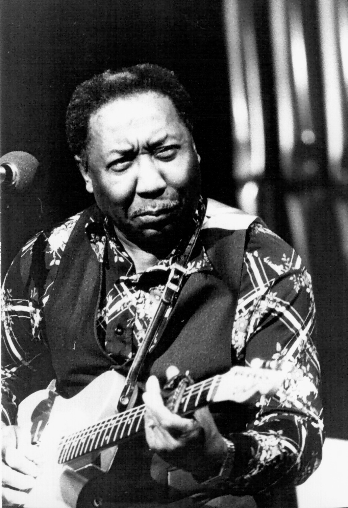
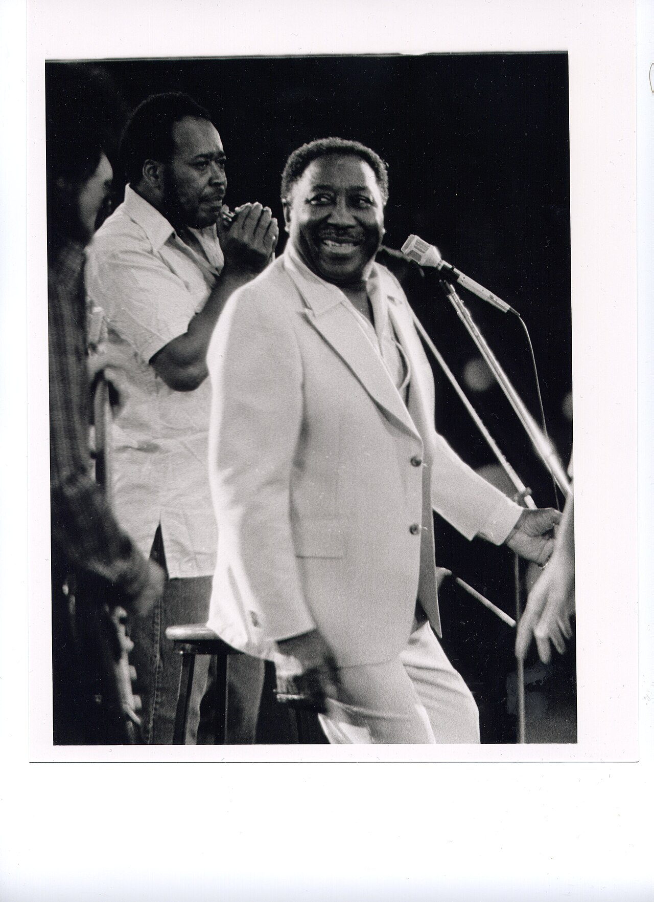
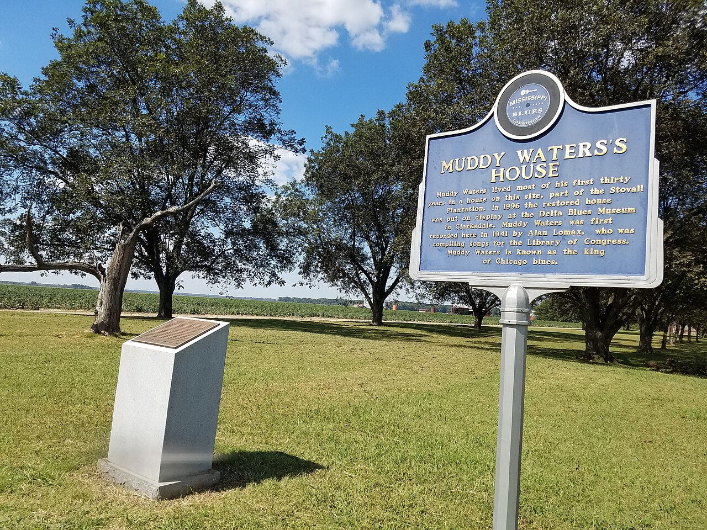
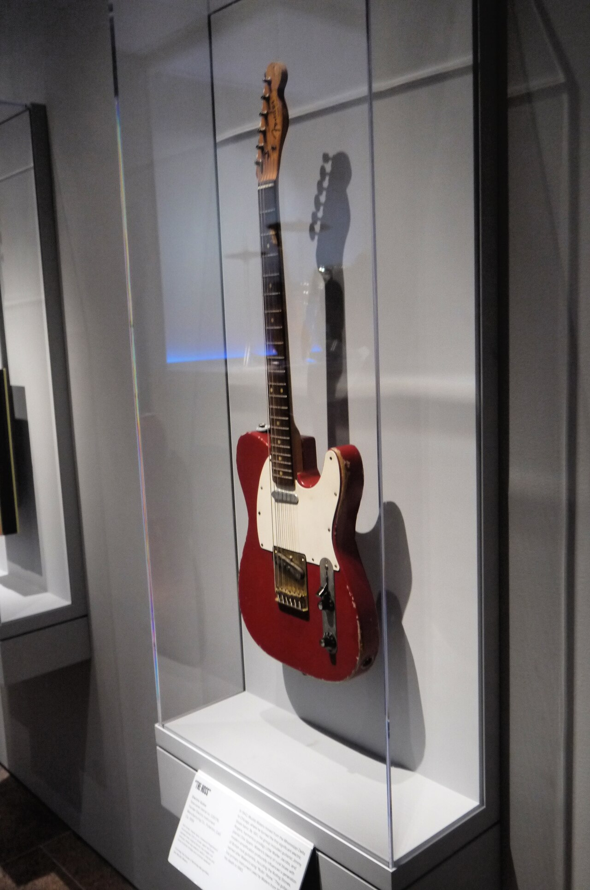
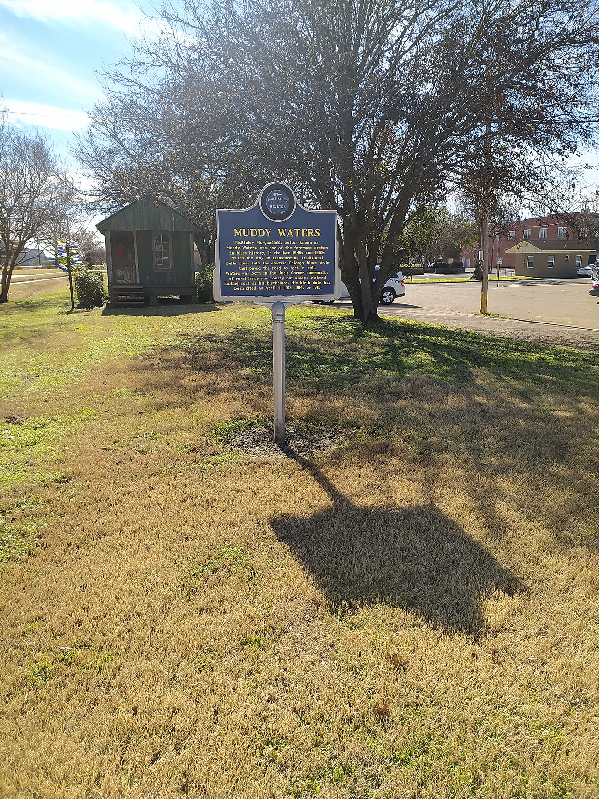

At a Glance
*His birth year is also cited as 1914 or 1915 in some sources; 1913 is the date used by Britannica and on his later documentation. He always claimed Rolling Fork as his birthplace.
Biography
Mississippi roots
McKinley Morganfield was born in the Mississippi Delta, in the Jug’s Corner / Rolling Fork area, and raised largely by his grandmother, Della Grant, after his mother died when he was young. The family moved to the Stovall Plantation near Clarksdale, where he worked in the cotton fields, sang in church, and taught himself harmonica as a small child. Friends shortened the “Muddy” nickname his grandmother gave him — for playing in the mud — into “Muddy Waters.”
At 17 he bought a guitar with money from selling a horse, and shaped his playing on the Delta masters he heard around Clarksdale, above all Son House and Robert Johnson. By the 1930s he was playing fish fries, house parties and juke joints around the Delta, sometimes travelling with Big Joe Williams, running a juke joint out of his own cabin at Stovall, and driving a tractor on the plantation by day.
Recorded on the plantation — 1941
In 1941, folklorist Alan Lomax and John Work III arrived at Stovall recording for the Library of Congress. They recorded Waters on the plantation — including early versions of songs he would carry for life. Hearing his own voice played back convinced him he could make music professionally. Lomax returned for a second session in 1942. Those field recordings were later issued as The Complete Plantation Recordings.
Chicago, and plugging in
In 1943 Waters joined the Great Migration and moved to Chicago. The city’s clubs were loud, crowded, and competitive, and an acoustic guitar simply could not be heard. His answer changed music: he switched to electric guitar, kept his Delta slide and deep, moaning-and-shouting vocal style, and built a full band around it — piano, harmonica, second guitar, bass and drums driving a heavy dance rhythm.
After early sessions for Columbia that went nowhere, he signed with Aristocrat Records, run by Leonard and Phil Chess. Aristocrat became Chess Records, and in 1948 “I Can’t Be Satisfied” and “I Feel Like Going Home” gave him his first hits. In 1950, “Rollin’ Stone” became his first major Chess success — a song whose name would later be taken by both a famous British band and a music magazine.
The classic Chess band
Through the early and mid-1950s, Waters led what many call the greatest blues band ever assembled: Little Walter Jacobs on amplified harmonica, Jimmy Rogers on guitar, Otis Spann on piano, Elgin Evans on drums, and bassist-songwriter Willie Dixon supplying a string of new songs written for Muddy’s voice and persona.
That team produced the run of Chess singles that defined Chicago blues: “Hoochie Coochie Man,” “I Just Want to Make Love to You,” and “I’m Ready” in 1954, “Mannish Boy” and “Trouble No More” in 1955, “Forty Days and Forty Nights” in 1956, and “Got My Mojo Working” in 1957. The sound was Delta blues, electrified and urban — the direct bridge to rock and roll and soul.
Newport, England, and a wider world
Waters first toured England in 1958, playing electric blues to audiences used to trad jazz and acoustic folk-blues — a shock that helped ignite the British blues boom. His blistering set at the Newport Jazz Festival on July 3, 1960, was filmed and released as At Newport 1960, often called the first great live blues album. Its closing “Got My Mojo Working” was so well received the band played it again as an encore.
As American pop tastes shifted in the 1960s, Chess tried to repackage him for folk audiences (Folk Singer, 1964 — a superb acoustic record) and, less successfully, for psychedelic rock audiences (Electric Mud, 1968). Through it all he kept touring, and a new generation of British and American rock musicians openly named him as a founding influence.
The comeback years
Waters won his first Grammy in 1971 for They Call Me Muddy Waters, then two more Chess-era Grammys in the 1970s. In November 1976 he performed “Mannish Boy” at The Band’s farewell concert, filmed as The Last Waltz.
The real revival came when guitarist Johnny Winter produced him for Blue Sky Records. Hard Again (1977), recorded in days with members of his touring band including James Cotton and Pinetop Perkins, sounded raw and joyful — and won another Grammy. I’m Ready (1978) and the live Muddy “Mississippi” Waters Live (1979) won Grammys too, bringing his total to six. His final studio album, King Bee, followed in 1981, and that November the Rolling Stones famously joined him on stage at Buddy Guy’s Checkerboard Lounge in Chicago.
His last live appearance was sitting in with Eric Clapton in Florida in the fall of 1982. Muddy Waters died in his sleep of heart failure at home in Westmont, Illinois, on April 30, 1983, aged 70. Blues musicians from across the country came to his funeral to pay their respects.
Timeline
Gallery





Also in the repo: his 1956 Martin 0018-E acoustic (played at Newport 1968), photographed at the Rock & Roll Hall of Fame — see images/muddy-martin-guitar.jpg.
Listen & Watch
Audio is streamed from the official services — nothing is hosted here. Start with the Spotify player, then watch him live.
On Spotify
“Got My Mojo Working” — Newport, 1960
The closing number from At Newport 1960, with Otis Spann, James Cotton, Pat Hare, Andrew Stephenson and Francis Clay.
With the Rolling Stones — Checkerboard Lounge, Chicago, 1981
On 22 November 1981 the Stones dropped in on Muddy at Buddy Guy’s club and ended up on stage with him — the student-pays-respects moment, captured on film.
More listening: Muddy Waters on Spotify · Live at Rockpalast 1978 (full concert) on YouTube
Essential Songs
| Song | Year | Why it matters |
|---|---|---|
| Rollin’ Stone | 1950 | His first Chess hit; gave the Rolling Stones (and Rolling Stone magazine) their name. |
| I Can’t Be Satisfied | 1948 | His first hit, cut from his Delta slide style — the template for his Chicago sound. |
| Long Distance Call | 1951 | A slow, aching showcase for his voice and slide guitar. |
| Hoochie Coochie Man | 1954 | Written by Willie Dixon; added to the Library of Congress National Recording Registry in 2004. |
| I Just Want to Make Love to You | 1954 | A Dixon standard, later covered by artists from Etta James to Foghat. |
| I’m Ready | 1954 | Pure swagger — the flip side of the same classic Chess run. |
| Mannish Boy | 1955 | An answer record to Bo Diddley’s “I’m a Man”; his signature statement, revived on Hard Again and in The Last Waltz. |
| Trouble No More | 1955 | Later a staple of the Allman Brothers Band’s live sets. |
| Got My Mojo Working | 1957 | His live showstopper from Newport onward — usually played twice. |
| You Shook Me | 1962 | Covered by Led Zeppelin on their debut album, with the arrangement traced to this recording. |
Four of his songs — “Rollin’ Stone,” “Hoochie Coochie Man,” “Mannish Boy” and “Got My Mojo Working” — are on the Rock & Roll Hall of Fame’s list of songs that shaped rock and roll.
Essential Albums
The Best of Muddy Waters (1958)
Twelve Chess singles that form the core canon — the best single-disc starting point for the 1950s band.
At Newport 1960 (1960)
The live landmark, recorded July 3, 1960. Often ranked among the greatest live blues albums ever made.
Folk Singer (1964)
Acoustic, intimate, and immaculately recorded — with Buddy Guy on second guitar and Willie Dixon on bass.
The Real Folk Blues (1966)
A Chess compilation that introduced his 1947–64 work to the 1960s folk-blues audience.
Hard Again (1977)
The Johnny Winter–produced comeback. Grammy winner, and the record that put him back in front of big audiences.
I’m Ready (1978) & King Bee (1981)
The other Winter productions — I’m Ready won a Grammy; King Bee was his final studio album.
The Band & The Sound
Classic sidemen
- Otis Spann — piano, his right hand for nearly two decades
- Little Walter Jacobs — amplified harmonica pioneer
- Jimmy Rogers — second guitar, the Chess band’s anchor
- Willie Dixon — bassist and Chess’s great songwriter
- James Cotton — harmonica, from the 1960s band onward
- Pinetop Perkins — piano in the 1970s touring band
What to listen for
- Bottleneck slide on electric guitar, in open tunings
- A voice that moves between a moan, a shout, and a grin
- Stop-time riffs — the band hits together, then leaves space
- Amplified harmonica answering the vocal, line for line
- Delta songs rebuilt over a hard Chicago dance rhythm
Legacy
Muddy Waters is the central link between Delta blues and rock and roll. The Rolling Stones took their name from his song, played his records as teenagers in London, and insisted on recording at Chess Studios when they reached Chicago. Eric Clapton called him a father figure, was best man at his 1979 wedding, and had him open tours. Led Zeppelin, the Allman Brothers, Jimi Hendrix, and generations of blues players built directly on his Chess recordings and his band format — two guitars, piano, harmonica, bass and drums is still the default electric blues lineup.
Chicago renamed part of 43rd Street for him, Westmont named a street in his honour too, his Stovall cabin stands at the Delta Blues Museum in Clarksdale, a Mississippi Blues Trail marker stands in Rolling Fork, and his guitars are museum pieces at the Met and the Rock & Roll Hall of Fame. B.B. King’s verdict, quoted after his death, was that it would be years before most people realised how great he was to American music.